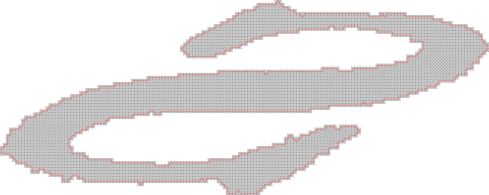

2dSimplePolygonDigitizer
Compute the Gauss Digitization of a simple closed polyline (no hole or self-intersection).
The digitizer compute the set of integer points inside the input polyline.
Usage: 2dSimplePolygonDigitizer [input] [output]
Allowed options are:
Positionals:
1 TEXT:FILE REQUIRED Input polyline filename (sdp).
Options:
Positionals:
1 TEXT:FILE REQUIRED Input polyline file name.
Options:
-h,--help Print this help message and exit
-i,--input TEXT:FILE REQUIRED Input sdp filename.
-o,--output TEXT=result.pgm the output image filename (pgm or svg)
Example:
You will obtain such image:

Resulting image
Example with more complex contours:
The file located in $DGtal/examples/samples/contourS.sdp
$ 2dSimplePolygonDigitizer -i $DGtal/examples/samples/contourS.sdp -o sample2.pgm
You will obtain such image:

Resulting image